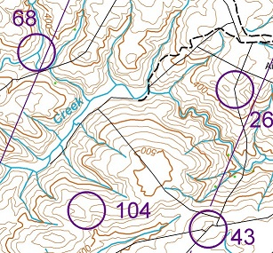

- Date
- Tuesday July 11th
- Timetable School Event
- 10.00amRegistration and map handout
- 10.45amBriefing
- 11.00amStart
- 2.00pmFinish
- 2.30pmResults and prize-giving
- Timetable Public Event
- 10.30amRegistration and map handout
- 11.15amBriefing
- 11.30amStart
- 2.30pmFinish
- 3.00pmResults
- Location
- Within 30 minutes drive of Blenheim
- Map
- The map will be derived from Topo50, the NZ standard topographic map with 20m contours. It will be pre-marked with checkpoint sites and out of bounds areas. Map size and scale will be notified closer to the event.
What is Rogaining?
A rogaine is a cross-country navigation event on foot, using a map and compass. This event will take you over a mix of challenging farmed and forested hill country with some scattered scrub and native bush.
Each person in your team (comprising 2 to 5 people) is given a standard topographical map with about 60 checkpoints of differing points value marked on it. A clue is provided for each checkpoint, e.g. “A saddle, N side”. Teams collect points by visiting checkpoints over the duration of the rogaine. The team with most points wins. Late finishers lose points.
As a team you choose your own route and distance within the mapped area. You decide which checkpoints to visit and in which order. You can be as competitive or as social as you choose. A team can go out ‘on course’ for the full time, or just a few hours. Water may be provided at one or more locations on the course. If they wish, teams can take a break at the hash house where hot food and drink is available from late afternoon. There’s an evening meal after the event too.
Plan your course well. Rogaining is as much about careful route choice and navigation as it is about physical endurance. For fit, first-time people, plan on about 2 to 2.5 kms per hour average over the whole event time. If you find you travel faster or slower adjust your course as you go.
For further information check out the NZRA website rogaine.org.nz.
If you are not sure, let us know with your entry. Or talk to someone at the registration desk.

Look at the map. The lines (see through 68) are magnetic north which is where your compass will point. From the track (dashed line) you should be able to follow the fence to 26. From there your should be able to continue following the fence to 43 but beware, the first part is down a hill to the creek bed. (Check that there is a stream junction there abouts.) Then you have to climb back up another hill. But when you are there you should have an easyish route to 104.
Can I do this?
Contacts
- Event
- mondokopua@gmail.com
Navlight Instructions
The navlight scoring system will be used. Each team will be issued with two tags which must be fitted using the supplied wrist-band to two team members. For a mixed team one member of each sex must wear a tag. Each of these team members must record their visit at each punch. The last to register is the allocated time.
 A Punch
A Punch Punch registering in a Tag
Punch registering in a Tag
The NavLight system has two main components; the Punches and the Tags. The Punches are powered by one AA battery and hang from a cord at each checkpoint. The Tags are un-powered and are worn on the wrist by the competitors. They are attached with a security band.
When you visit a checkpoint you record your visit by inserting the Punch into the Tag; a process which typically takes half a second. A red light flashes regularly to indicate that your visit has been recorded.
Apart from the Checkpoint Punches, there are some special-purpose punches which you MUST be aware of. They look the same as normal Punches but have been allocated a special Status.
- Use a BRIEF Punch before the event start.
- Use a FINISH Punch whenever you return to the Administration area.
- Use a DEPART Punch if you have returned and go out again.
After you have used the FINISH Punch at the end of the event an organizer will remove your tag from your wrist (do not remove it yourself) and it will be scored. Wait for your printout which will look something like this: (Start time was 6:40:00 PM.)
Team No. 62 Tag ID = ACBA Tags=0017
Line # PunchID Value Time Punched Split Time.
1 66 21/12/2005 6:35:41 PM BRIEFING. Score reset.
2 26 20 21/12/2005 6:44:43 PM 0:04:43
3 21 20 21/12/2005 6:58:12 PM 0:13:29
4 30 30 21/12/2005 7:01:18 PM 0:03:06
5 48 40 21/12/2005 7:06:30 PM 0:05:12
6 37 30 21/12/2005 7:17:30 PM 0:11:00
7 53 50 21/12/2005 7:27:21 PM 0:09:51
8 38 30 21/12/2005 7:33:51 PM 0:06:30
9 38 21/12/2005 7:33:52 PM 0:00:00 Punched on Line 8
10 41 40 21/12/2005 7:44:20 PM 0:10:28
11 60 60 21/12/2005 7:56:10 PM 0:11:50
12 55 50 21/12/2005 8:02:56 PM 0:06:46
13 44 40 10/12/2004 1:05:20 PM Before Event Start.
14 61 60 21/12/2005 8:50:26 PM 0:47:30
15 28 20 21/12/2005 8:59:33 PM 0:09:07
16 64 21/12/2005 9:42:46 PM 0:43:13 FINISH TIME.
17 65 21/12/2005 9:42:52 PM 0:00:06 FINISH TIME Ignored.
END
Recognised finish time 21/12/2005 9:42:46 PM
Time on course 3:02:46
490 Points Scored.
30 Late Penalty.
Nil Manual adjustment.
FINAL SCORE = 460
Note that on line 13, the recorded time was a year early. This happens if the battery has been momentarily disconnected in the Punch sometime before you got to it. Although the time is wrong, you still get the points.
The function of special-purpose Punches is described in more detail below.
- TEST Punch. This is available at Registration for you to try your Tag to see how the system works. It has no effect on your score. If the red light flashes even once, it has worked.
- BRIEF Punch. One or more BRIEF Punches will be available shortly before the event start. You will usually find the BRIEF Punch as you enter the Briefing area; hence the name. Officials may inspect your Tag to ensure it is properly fastened on your wrist so it is important that each Tag is registered on one of these Punches BEFORE you start the event.
- FINISH Punch. Several of these will be available at the finish line. ALL team members with Tags MUST use one as you finish, as it records your finish time. For a team, the finish time is taken as the time of the last Tag to finish. If you return during the event, you should still use a Finish Punch. It doesn’t matter if you subsequently go out for more checkpoints, as long as you use a FINISH Punch again when you return. Earlier Finish times will be ignored.
- DEPART Punch. If you visit the administration area during an event, and use a FINISH Punch when you arrive, you must use a DEPART Punch when you leave again.
Fitting the wrist-bands
The wrist-bands are made from a rugged vinyl material and can not be removed from the wrist without breaking them. Wear them quite loosely; you should be able to fit two fingers comfortably between the band and your wrist. Over a 24-hour period, a tight strap will cause irritation.
Thread the band through your Tag, wrap it around your wrist, then close the clasp through one of the holes in the strap. There is a loose end which you can pull off carefully.


WHAT IF SOMETHING GOES WRONG
PUNCH FAILURE
If you encounter a Punch which fails to operate, write down its internal 3-letter Code as evidence that you have visited the checkpoint. This 3-letter code is visible through the transparent plastic cover. However, your team will be credited with the visit only if it can be verified that the Punch has indeed failed.
There is a possibility that the punch has temporarily lost its power. If so, you may have to wait for up to three seconds for a response.
TAG FAILURE
Again, you can only record the internal 3-letter Code inside each Punch you visit. You can rely on the other Tags in your team to record your visit, but tell the organizers when you finish. Your team will be credited with the visit only if it can be verified that your Tag did indeed fail.

New Zealand Secondary Schools Rogaining Championships - 2023
Part of the Te Tau Ihu NavSport Festival 2023 held over the July holidays
- Saturday and Sunday 8th and 9th
- South Island Secondary Schools Orienteering Champs - All events within 30 minutes drive of Nelson
- Tuesday 11th
-
New Zealand Secondary Schools Rogaining Champs - Event within 30 minutes drive of Blenheim
There will also be a public event at the venue - Thursday, Friday and Saturday 13th, 14th and 15th
- New Zealand Secondary Schools Orienteering Champs - All events within 20 minutes drive of Blenheim
For further information contact mondokopua@gmail.com